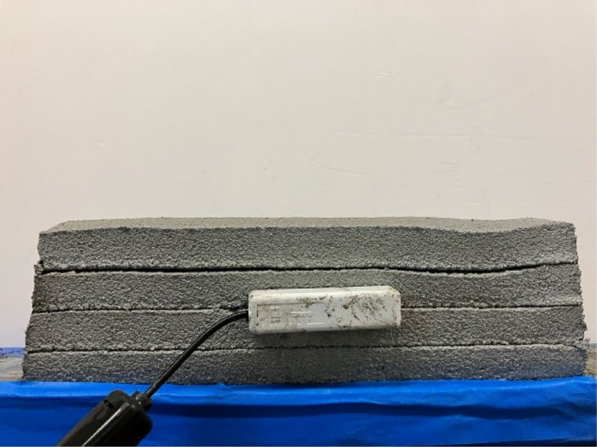
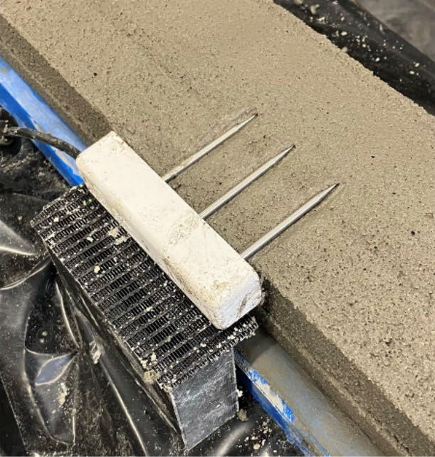
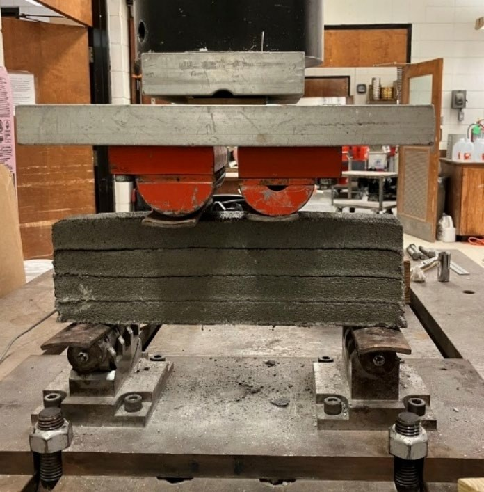

Machine Learning-based early-age strength prediction of 3D printed concrete
A 3D-printed wall has no formwork, so it is exposed to the air from the moment it is printed, and it is expected to carry loads within days. How strong is it right now? Today the honest answer means printing extra beams and breaking them in a lab. In this project I embedded a small sensor inside 3D-printed concrete beams, recorded how their electrical properties and temperature changed as they cured, and trained machine learning models to turn those readings into a strength estimate. The best model, a neural network, explains 95.1% of the variation in flexural strength across three concrete mixes, two curing methods and the first seven days of age.
Published in Progress in Additive Manufacturing, 2025. DOI: 10.1007/s40964-025-01017-4

of strength variation explained by the neural network (R², 10-fold mean)
3D-printed beams monitored and tested to failure
prediction error (RMSE) of the best model, on beams averaging 2.8 MPa
of age covered, the window when the next build steps are decided
Why nobody knows how strong a freshly printed wall is
3D printing promises to build fast, and that speed only pays off if the next step, such as installing a roof, can follow soon after printing. That decision depends on one number: how much strength the concrete has gained so far. For printed concrete, that number is unusually hard to know.
Hover over each factor, or tap it, to see why it makes strength hard to predict.
Printed concrete is exposed from the first minute
Cast concrete sits inside a mould that holds its water in while the cement reacts. A printed layer is built without a mould, so every surface is open to the air and water evaporates from the start. Cement needs that water to gain strength.
The same mix can end up with different strengths
Hot, dry air pulls water out faster and can stall the hydration reactions. A curing compound sprayed on the surface slows that loss. Two beams printed from the same batch can gain strength at different rates depending on how they were treated after printing.
Printed structures are expected to work within days
The point of robotic printing is speed, so printed elements are expected to carry service loads soon after printing. Waiting the conventional 28 days for strength to settle throws that advantage away, which makes the first week the period that matters.
Destructive testing is accurate but slow and blind
The standard way to measure strength is destructive: a sample is loaded in a press until it fails. It needs extra specimens and preparation, gives one number at one moment, and the sample did not cure under the same conditions as the wall. It cannot follow strength continuously.
The maturity method assumes the water stays put
For cast concrete, engineers estimate strength from temperature history alone (the maturity method). That works when a mould keeps the moisture constant. In printed concrete, moisture changes with evaporation, so temperature alone cannot tell the full story.
One embedded sensor, three readings, all week long
I placed a compact sensor, originally designed to measure soil moisture (TEROS-12), on top of the second layer during printing. The robot then printed the third and fourth layers over it, so the sensor ends up buried in the middle of the beam, where it reads the concrete continuously as it hardens.

Hover over each reading, or tap it, to see what it reveals about the concrete.
Relative permittivity: how much free water is left
Permittivity measures how strongly a material responds to an electric field, and water responds far more than cement or sand. As cement hydrates it consumes water, so permittivity falls as the concrete gains strength.
Tells the model: how far has hydration progressed, and how much water remains to keep it going?
Electrical resistivity: how closed the pores are
Current flows through the water in the concrete's pores. Hydration uses that water up and fills the pores with solid products, so resistivity rises steadily. In the data it had the strongest correlation with age of any input (R = 0.84).
Tells the model: how dense has the internal structure become?
Internal temperature: how fast the reaction runs
Hydration releases heat and runs faster when warm. Measured inside the beam, not in the room, temperature is the classic input of the maturity method and ranged from 21.6 to 32.5 °C across the dataset.
Tells the model: how quickly is strength being gained right now?
From printed beam to labelled data point
Each beam was printed by a lab-scale concrete printer, monitored by its sensor, and then broken in a four-point bending test (ASTM C78) at a set age. The sensor readings at that moment, together with what is known about the mix and how it was cured, become the inputs. The measured strength becomes the answer the model learns to predict.
Two layers are printed, the sensor is embedded, then two more layers go on top. Half the beams get a sprayed curing compound.
Monitor
The sensor records permittivity, resistivity and temperature continuously while the beam cures.
Break
Beams are tested in four-point bending at 1, 3, 5 or 7 days to get their true flexural strength.
Learn
Six inputs per beam are normalised and used to train and test the machine learning models.

- Nozzle 100 × 25 mm, printing at 40 mm/s
- 4 layers, 120 s between layers
- Strengths from 1.97 to 4.26 MPa
Which model read the sensors best?
I trained three types of model on 80% of the beams and tested them on the 20% they had never seen, then compared them with the empirical curves from my earlier study, which had to be fitted separately for every mix and curing method. The ML models use one model for all of them.
The winning network
- Multilayer perceptron, 4 hidden layers of 16 neurons
- ReLU activation, L-BFGS optimiser
- Curing method one-hot encoded
- Validated with 10-fold cross-validation
What the neural network pays attention to
A permutation feature importance analysis shuffles one input at a time and measures how much worse the predictions get. The bigger the drop, the more the model relies on that input.
Hover over each input, or tap it, to see what it is and why it matters.
Curing method: the most important input
Whether the beam was left in open air or sprayed with a curing compound mattered more than anything else. Earlier ML studies of printed concrete largely left curing out. This result says it cannot be ignored when there is no formwork to hold the water in.
Internal temperature: second most important
Temperature drives hydration, which is why it is the basis of the maturity method. The model confirms it is essential, but also that on its own it is not enough for printed concrete.
Water-to-cement ratio
The recipe. Less water per unit of cement gives a stronger, denser paste. It is known before printing, so it costs nothing to include.
Age
Days since printing, from 1 to 7. Strength grows with time, but how fast depends on everything else on this list.
Relative permittivity
The more useful of the two electrical readings. It responds directly to free water, the quantity that evaporation steals and the maturity method cannot see. My earlier study was the first to use permittivity to estimate the strength of 3D-printed concrete, and the network ranks it above resistivity.
Electrical resistivity
Lowest on its own, partly because it moves so closely with age (R = 0.84) that much of its information is already in the model. It still adds accuracy, as the next section shows.
Permutation feature importance
Neural network. Values are read from Fig. 10 of the paper, so they are approximate. In percent, on a 0 to 100% scale.
What happens when the model sees less?
To check that every input earns its place, I retrained and re-optimised the network with parts of the data removed.
Accuracy of the neural network with different sets of inputs
R² on unseen beams, in percent.
Sensor readings alone reach 85%. Adding what is already known about the beam (mix, age and curing method) lifts that to 95.1%. The sensors and the context work best together, and removing either electrical reading costs accuracy.
What this changes for construction
The empirical approach needed a new calibration curve for every mix and every curing method. The ML models handle all of them at once and are more accurate (95.1% compared with at least 83.6%).
A sensor embedded during printing keeps reporting for as long as it is there, so strength can be followed day by day instead of sampled once by breaking a beam. That gives the site team an evidence-based answer to the question that drives the schedule: is this wall ready for the next step? The same approach scales to large printed structures and fits into automated quality monitoring, where sensors and AI replace guesswork.
There is more to do. The dataset of 144 beams covers three plain cement mixes and two curing methods. Next steps are larger datasets, other curing methods such as steam curing, and mixes with supplementary cementitious materials.
Terms you will see in the paper
Early-age strength
The strength concrete has in its first days, while it is still gaining strength quickly. Here, 1 to 7 days after printing.
Flexural strength
How much bending stress a beam can take before it cracks. It is measured by supporting the beam at both ends and pressing down in the middle.
Curing
Everything that happens to concrete after it is placed while it hardens, especially how much water it keeps. A curing compound is a liquid sprayed on the surface that forms a film and slows evaporation.
Relative permittivity
A measure of how strongly a material responds to an electric field. Water has a very high value, so permittivity is a good indicator of how much free water the concrete still holds.
Maturity method
The standard non-destructive way to estimate concrete strength from its temperature history. It assumes the moisture conditions stay constant, which printed concrete does not guarantee.
R² (coefficient of determination)
The share of the variation in the real values that the model's predictions explain. 100% would be perfect, 0% no better than always guessing the average.
Linear regression, SVR and neural network
Three kinds of model, from simplest to most flexible. Linear regression fits a straight-line relationship. Support vector regression (SVR) can bend that relationship using a kernel. A neural network learns its own non-linear relationships from the data.
10-fold cross-validation
Splitting the data into ten parts, training on nine and testing on the tenth, and repeating so every part is tested once. It shows whether a good score was luck or holds up across the data.
Machine learning approach to predict the early-age flexural strength of sensor-embedded 3D-printed structures
Kasra Banijamali, Mary Dempsey, Jianhua Chen and Ali Kazemian. Progress in Additive Manufacturing, volume 10, 2025, pages 6921–6933. Open access.
DOI: https://doi.org/10.1007/s40964-025-01017-4
Open the paperPhotos on this page are from the paper, published under a CC BY 4.0 licence.